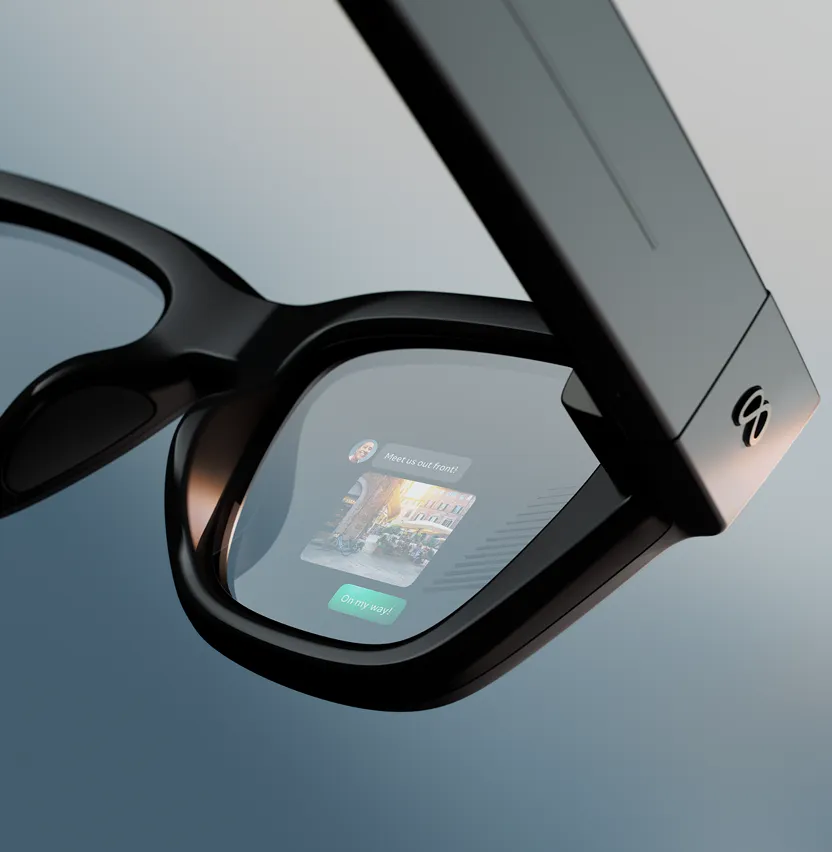
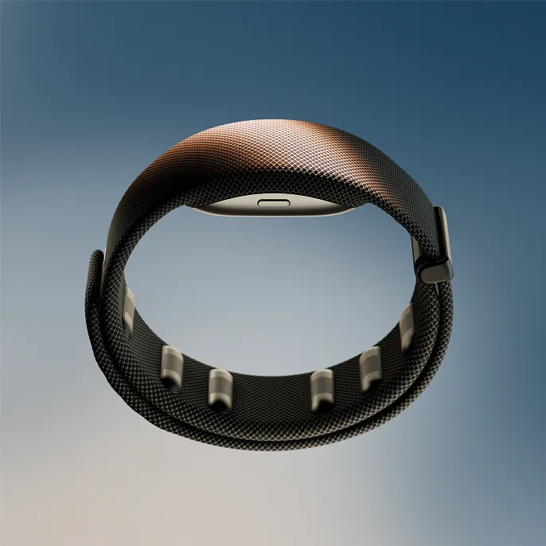

Información en contexto
Subtítulos en directo, traducciones, indicaciones para llegar a un sitio o una respuesta del asistente aparecen delante de los ojos, sin pasar por el móvil.
Trabajo de Interacción Persona-Ordenador
Unas gafas con una pantalla dentro de la lente, que se manejan con una pulsera que lee los músculos de la muñeca. El ordenador deja de ser un objeto que sacas del bolsillo.

Las Meta Ray-Ban Display son las primeras gafas de Meta con una pantalla en color integrada. Se presentaron en septiembre de 2025 y salieron a la venta en Estados Unidos a finales de ese mes. Desde entonces han empezado a llegar a Europa a través de operadores como Telekom en Alemania.
La pantalla está en la lente derecha y es pequeña a propósito: está pensada para mirar un mensaje, un mapa o una traducción en un par de segundos y seguir con lo que estabas haciendo. Con la pantalla apagada, parecen unas gafas normales de la marca Ray-Ban.
Se venden junto con la Meta Neural Band, una pulsera que sirve de mando. Las gafas se emparejan con iPhone y con Android.
La interacción persona-ordenador estudia cómo nos comunicamos con las máquinas. Este dispositivo me parece un buen ejemplo porque cambia a la vez lo que vemos y cómo damos órdenes.
Subtítulos en directo, traducciones, indicaciones para llegar a un sitio o una respuesta del asistente aparecen delante de los ojos, sin pasar por el móvil.
Se puede navegar con pequeños gestos de los dedos sin hablar en voz alta ni levantar la mano. Es útil en una biblioteca, en un transporte público o con las manos ocupadas.
Los subtítulos en tiempo real ayudan a personas con dificultades auditivas, y un control basado en señales musculares abre la puerta a quien no puede usar bien una pantalla táctil.
Mirar el móvil nos saca de la conversación. Una pantalla que se consulta de reojo reduce esa ruptura y mantiene la atención en el entorno.
La Meta Neural Band usa electromiografía de superficie. Unos sensores en la muñeca detectan la actividad eléctrica de los músculos cuando mueves los dedos y la traducen en órdenes para las gafas. Con ello puedes desplazarte por menús, seleccionar, hacer zoom en la cámara y, según Meta, escribir mensajes con movimientos mínimos.
La diferencia con otros sistemas es que no necesita que una cámara vea tu mano. El gesto puede ser tan pequeño que apenas se nota desde fuera, y funciona aunque tengas la mano en el bolsillo.
Meta indica que la pulsera es el resultado de cuatro años de investigación con cerca de doscientos mil participantes, para que funcione con distintas personas sin tener que entrenarla desde cero.

Estas gafas no sustituyen a un solo aparato. Reúnen la evolución de dos cosas: cómo vemos la información y cómo la controlamos.
| Época | Dispositivo | Qué aportó | Qué le faltaba |
|---|---|---|---|
| Años 80 y 90 | Ordenador de sobremesa con teclado y ratón | Interfaz gráfica y control preciso del puntero | Estaba atado a una mesa |
| 2007 | Móvil con pantalla táctil | El ordenador cabe en el bolsillo y se toca directamente | Ocupa las manos y la mirada |
| 2010 a 2011 | Gestos con cámara y asistentes de voz | Controlar sin tocar nada | Poco discretos y poco fiables en ruido o con mala luz |
| 2013 | Google Glass | Primera pantalla en unas gafas para el público | Aspecto raro, problemas de privacidad y poca utilidad |
| 2021 y 2023 | Ray-Ban Stories y Ray-Ban Meta | Gafas de aspecto normal con cámara, micrófonos y asistente | No tenían pantalla: todo se oía, nada se veía |
| 2025 | Meta Ray-Ban Display con Neural Band | Pantalla en la lente y control por señales musculares | Autonomía limitada, precio alto y poco campo de visión |
Página oficial del producto: meta.com/ai-glasses/meta-ray-ban-display
Ficha técnica con más detalles: vrarwiki.com/wiki/Ray-Ban_Display